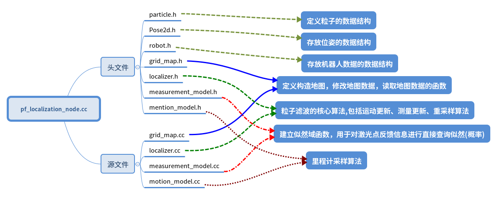
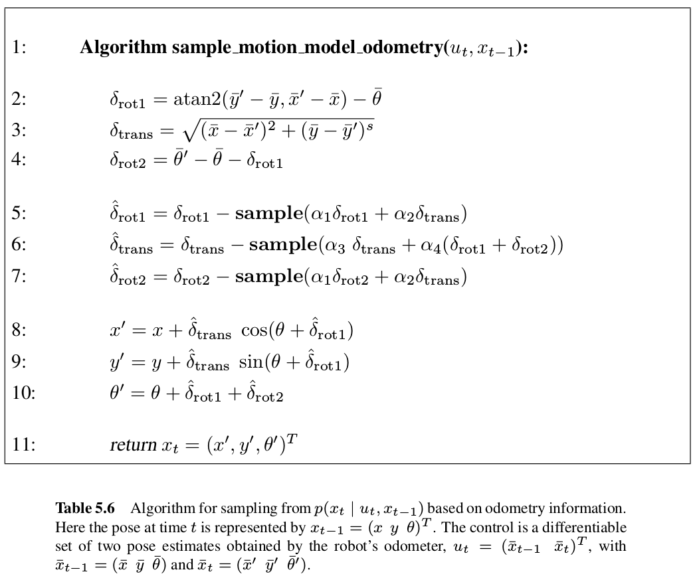
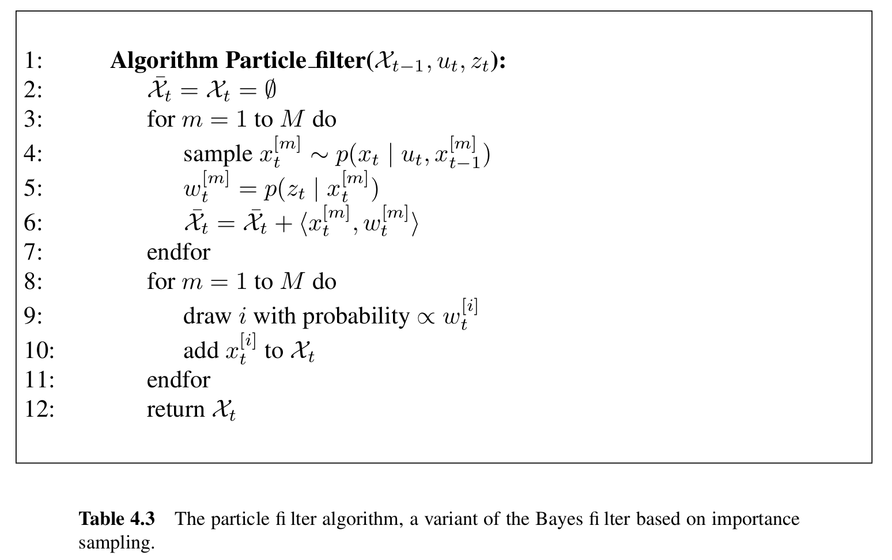
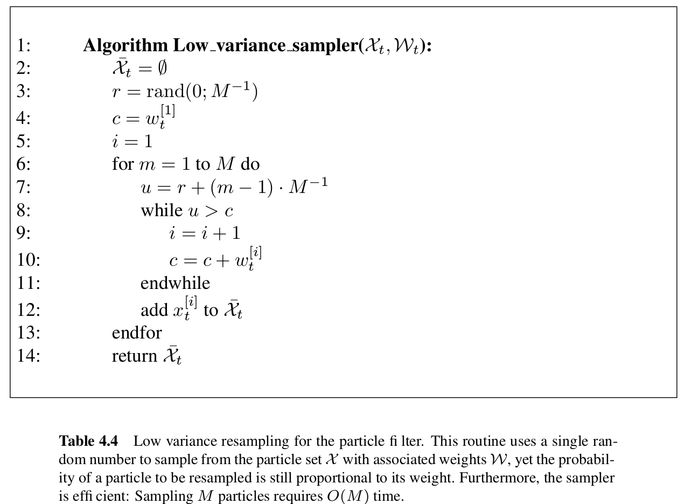
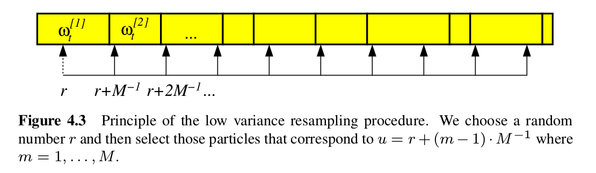
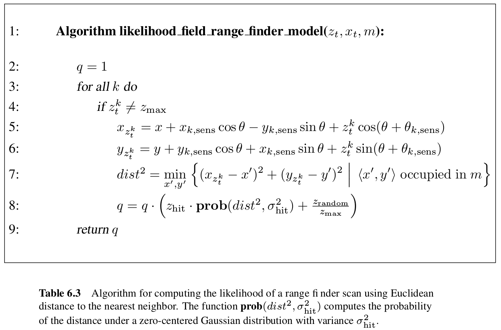

本文整理自硕士研究生期间的学习与实践记录，涉及的软件版本和依赖可能已经更新，请结合当前官方文档使用。
1. 代码结构
整个文件一共有7个头文件：
grid_map.h、localizer.h、measurement_model.h、motion_model.h、particle.h、Pose2d.h、robot.h
有4个源文件：
grid_map.cc、localizer.cc、measurement_model.cc、motion_model.cc
还有一个主文件：
pf_localization_node.cc
代码框架如下图：

2. 核心代码解读
2.1 localizer.cc解读
先看看头文件含有哪些函数
class Localizer{
public:
/* 初始化粒子，在地图可行区域随机撒粒子 */
Localizer(Robot* robot, GridMap* map, MotionModel* motion_model, MeasurementModel* measurement_model, size_t nParticles);
/* 通过odom信息进行运动更新 */
void motionUpdate(const Pose2d& odom);
/* 通过雷达激光信息进行测量更新 */
void measurementUpdate(const sensor_msgs::LaserScanConstPtr& scan );
/* 粒子重采样（重要性采样） */
void reSample();
/* 把粒子姿态信息转化为ros下话题类型geometry_msgs::PoseArray */
void particles2RosPoseArray(geometry_msgs::PoseArray& pose_array);
/* 清除走出地图的粒子以及对粒子权重进行归一化 */
void normalization();
}; //class Localizer
2.1.1 运动更新代码解读void motionUpdate(const Pose2d& odom);
首先先看看中文版概率机器人 P103 中 程序5.6

从程序5.6中可以看出输入$u_t$是机器人里程计信息。
算法第2、3行计算了采样时间内运行距离算得的角度差、运行的距离。
第4行代码计算的是里程计测量的角度差和里程计测得位置计算的角度差之间的误差。
算法5-7行在角度、距离和误差上进行高斯采样，该采样基于角度差、运行距离和误差。可以看出走的距离越远，累计误差越大，方差会越大。
算法第8-9行更据单位时间内的移动求累计运行距离和角度。
其中sample(x)是生成均值为0,方差为x的随机样本的函数。
运动更新代码：
void Localizer::motionUpdate ( const Pose2d& odom )//获取odom信息进行运动更新
{
const double MIN_DIST = 0.02; // TODO param 如果运动太近的话就不更新了，防止出现角度计算错误
if ( !is_init_ ) //首次
{
last_odom_pose_ = odom;
is_init_ = true;
return;
}
/* 计算ut，可见概率机器人第5章里程计运动模型 程序5.6里程计运动模型 P103*/
double dx = odom.x_ - last_odom_pose_.x_;
double dy = odom.y_ - last_odom_pose_.y_;
double delta_trans = sqrt ( dx * dx + dy * dy );//第3行
double delta_rot1 = atan2 ( dy, dx ) - last_odom_pose_.theta_;//第1行
Pose2d::NormAngle ( delta_rot1 );
/* 处理纯旋转 */
if(delta_trans < 0.01)
delta_rot1 = 0;
double delta_rot2 = odom.theta_ - last_odom_pose_.theta_ - delta_rot1;//第4行
Pose2d::NormAngle ( delta_rot2 );
/*第5-11行*/
for ( size_t i = 0; i < nParticles_; i ++ )
{
motion_model_->sampleMotionModelOdometry ( delta_rot1, delta_trans, delta_rot2, particles_.at ( i ).pose_ ); // 更新每一个粒子的位置信息
}
last_odom_pose_ = odom;
}
void MotionModel::sampleMotionModelOdometry ( const double& delta_rot1, const double& delta_trans, const double& delta_rot2, Pose2d& xt )//处理粒子的的位置和角度
{
/* 处理后退的问题 */
double delta_rot1_PI = delta_rot1 - PI;
double delta_rot2_PI = delta_rot2 - PI;
Pose2d::NormAngle(delta_rot1_PI);
Pose2d::NormAngle(delta_rot2_PI);
double delta_rot1_noise = std::min(fabs(delta_rot1), fabs( delta_rot1_PI) );
double delta_rot2_noise = std::min(fabs(delta_rot2), fabs( delta_rot2_PI) );
double delta_rot1_2 = delta_rot1_noise*delta_rot1_noise;
double delta_rot2_2 = delta_rot2_noise * delta_rot2_noise;
double delta_trans_2 = delta_trans * delta_trans;
/* 采样 */
double delta_rot1_hat = delta_rot1 - rng_.gaussian(alpha1_ * delta_rot1_2 + alpha2_ * delta_trans_2);//第5行
double delta_trans_hat = delta_trans - rng_.gaussian(alpha3_ * delta_trans_2 + alpha4_ * delta_rot1_2 + alpha4_ * delta_rot2_2);//第6行
double delta_rot2_hat = delta_rot2 - rng_.gaussian(alpha1_ * delta_rot2_2 + alpha2_ * delta_trans_2);//第7行
/*第11行*/
xt.x_ += delta_trans_hat * cos( xt.theta_ + delta_rot1_hat );//第8行
xt.y_ += delta_trans_hat * sin( xt.theta_ + delta_rot1_hat );//第9行
xt.theta_ += (delta_rot1_hat + delta_rot2_hat);//第10行
xt.NormAngle(xt.theta_);
}
2.1.2 测量更新代码解读 void measurementUpdate(const sensor_msgs::LaserScanConstPtr& scan );
首先先看看中文版概率机器人P74中程序4.3，粒子滤波算法：

算法4.3中第3、4、5行相当于循环取一个粒子求他们的权重，这个权重需要把每个粒子与所有的激光进行坐标变换（激光距离信息转换到激光坐标系下，然后把粒子转换带全局坐标系下），然后去从似然地图中得到似然，最后累加所以激光得到的似然获得该粒子的权重。
第6行没懂什么意思。
第8-11行是粒子滤波最重要的重采样，这里的重采样会出现机器人不动，而还在进行重采样，造成失去低概率区域的许多样本，最后造成很差的定位效果。
测量更新代码：
/*测量更新，中文概率机器人第4章 P74 程序4.3*/
void Localizer::measurementUpdate ( const sensor_msgs::LaserScanConstPtr& scan )
{
if ( !is_init_ )
{
return;
}
/* 获取激光的信息 */
const double& ang_min = scan->angle_min;
const double& ang_max = scan->angle_max;
const double& ang_inc = scan->angle_increment;
const double& range_max = scan->range_max;
const double& range_min = scan->range_min;
/*求每个粒子的权重*/
for ( size_t np = 0; np < nParticles_; np ++ )
{
Particle& pt = particles_.at ( np );
/* for every laser beam */
/* 对每个激光返回的点求似然，然后累加得到这个粒子的总似然做权重*/
for ( size_t i = 0; i < scan->ranges.size(); i ++ )
{
/* 获取当前beam的距离 */
const double& R = scan->ranges.at ( i );//常量引用
if ( R > range_max || R < range_min )
continue;
double angle = ang_inc * i + ang_min;
double cangle = cos ( angle );
double sangle = sin ( angle );
Eigen::Vector2d p_l (
R * cangle,
R* sangle
); //激光数据在雷达的坐标系下的坐标
/* 转换到世界坐标系下 概率机器人第6章 P128 公式6.32，这里相当于转换到每个粒子的坐标系下去匹配似然*/
Pose2d laser_pose = pt.pose_ * robot_->T_r_l_;//用运算符重载 * 计算雷达的全局坐标和角度
Eigen::Vector2d p_w = laser_pose * p_l;//用运算符重载 * 计算激光点在全局坐标系下的坐标
/* 更新weight */
double likelihood = measurement_model_->getGridLikelihood ( p_w ( 0 ), p_w ( 1 ) );//从初始化的似然地图上获取似然值
/* 整合多个激光beam用的加法， 用乘法收敛的太快 */
pt.weight_ += likelihood;
}// for every laser beam
} // for every particle
/* 权重归一化 */
normalization();
/* TODO 这里最好使用书上的Argument 的重采样 + KLD重采样方法.
*重采样频率太高会导致 粒子迅速退化 */
static int cnt = -1;
if ( (cnt ++) % 10 == 0 ) //减少重采样的次数
reSample(); //低方差重采样
}
2.1.3 重采样代码解读 void reSample();
概率机器人P78 程序4.4重采样算法：

算法4.4是低方差重采样算法，该算法可以更有序的形式覆盖样本空间、避免了样本丢失和复杂度为O(M)。
那么如何来理解重采样算法4.4呢？
整个重采样过程有一个0-$M^{-1}$的随机数，如算法第3行所示。
算法中while循环完成两个任务：计算等式右边的和;检查i是否是第一个粒子的索引，对应的权值是否超过U。在第12行进行选择。
第6-12行请看下图理解

上图中每个箭头的间距都为$M^{-1}$，如果粒子的累计权重>此刻的U，就把该粒子加入新的粒子集，该部分进行了重采样。
重采样代码：
/*低方差重采样的理解可以看概率机器人第四章 P82 理解，算法在P78 程序4.4*/
void Localizer::reSample()
{
if ( !is_init_ )
return;
/* 重采样 ，可见概率机器人第4章粒子滤波的低方差重采样算法，程序4.4,p78*/
std::vector<Particle> new_particles;
/*
RNG可以产生3种随机数
RNG(int seed) 使用种子seed产生一个64位随机整数，默认-1
RNG::uniform( ) 产生一个均匀分布的随机数
RNG::gaussian( ) 产生一个高斯分布的随机数
*/
cv::RNG rng ( cv::getTickCount() );
long double inc = 1.0 / nParticles_;
long double r = rng.uniform ( 0.0, inc );//从0,inc随机取数，第3行
long double c = particles_.at ( 0 ).weight_;//取第一个粒子的权重，第四行
int i = 0;
/*第6-12行*/
for ( size_t m = 0; m < nParticles_; m ++ )
{
long double U = r + m * inc;//通过随机的r加上均值概率和
while ( U > c )//该循环完成两个任务：计算该等式右边的和;检测i是否是第一个粒子的索引，对应的权值和是否超过U。
{
i = i+1;
c = c + particles_.at ( i ).weight_;//粒子权重累加
}
particles_.at ( i ).weight_ = inc;//把概率大的粒子的权重变为1/M
/* 在概率大的粒子上进行采样，直到采满m个，新采样的粒子加了高斯，稍微增加一下多样性，新粒子的权重都为1/M */
Particle new_pt = particles_.at(i);
new_pt.pose_.x_ += rng.gaussian(0.02);
new_pt.pose_.y_ += rng.gaussian(0.02);
new_pt.pose_.theta_ += rng.gaussian(0.02);//产生均值为0,方差为0.02的高斯随机数
Pose2d::NormAngle(new_pt.pose_.theta_);
new_particles.push_back ( new_pt );
}
particles_ = new_particles;//更新之前的粒子群
}
2.2 measurement_model.cc代码解读
该代码主要用于求似然，用于粒子的权重更新。
该算法在中文版概率机器人P130 程序6.3。
似然值计算算法如下：

算法6.3和下面的程序有些许不同
算法6.3的第4行用于检查传感器读书是否为最大距离读数，如果是则舍弃。
第5-6行把雷达测得的距离信息结合粒子位置转换到全局地图坐标系。
第7行，根据已有地图，把全局坐标系下测得的障碍为位置信息与已有地图中最近障碍物的算欧式距离。
第8行通过一个正态分布和一个均匀分布混合得到似然结果。
而下面代码中，直接定义一个似然域地图，通过提前计算好地图上每个位置的似然值，然后后面直接通过粒子直接在该地图上查询得到似然值。
在程序在通过求似然域地图和粒子信息做比较获取似然值，代码如下：
/* 中文版概率机器人第6章 P130 程序6.3 */
MeasurementModel::MeasurementModel ( GridMap* map, const double& sigma, const double& rand ):
map_(map), sigma_(sigma), rand_(rand)
{
/* 初始化似然域模型, 预先计算的似然域模型的格子大小比占有栅格小1倍*/
size_x_ = 2 * map->size_x_;
size_y_ = 2 * map->size_y_;
init_x_ = 2 * map->init_x_;
init_y_ = 2 * map->init_y_;
cell_size_ = 0.5 * map->cell_size_;
likelihood_data_.resize(size_x_ , size_y_); //这个似然域地图，用于后面激光点打到的位置的似然值进行查表
likelihood_data_.setZero();
/* 构造障碍物的KD-Tree，用到了PCL库函数 */
pcl::PointCloud<pcl::PointXY>::Ptr cloud (new pcl::PointCloud<pcl::PointXY>);//pcl::PointXY储存2维点云
for(int i = 0; i < map->size_x_; i ++)
for(int j = 0; j < map->size_y_; j ++)
{
if(map->bel_data_(i, j) == 1.0) //是障碍物就加到KD树中
{
pcl::PointXY pt;
pt.x = (i - map->init_x_) * map->cell_size_;//获取障碍物到世界坐标原点的相对距离
pt.y = (j - map->init_y_) * map->cell_size_;
cloud->push_back(pt);
}
}
kd_tree_.setInputCloud(cloud);
/* 对每个格子计算likelihood */
for(double i = 0; i < size_x_; i += 0.9)
for(double j = 0; j < size_y_; j +=0.9)
{
/* 计算double x, y */
double x = ( i - init_x_)* cell_size_;
double y = ( j- init_y_ ) * cell_size_;
double likelihood = likelihoodFieldRangFinderModel(x, y);
setGridLikelihood(x, y, likelihood);
}
}
double MeasurementModel::likelihoodFieldRangFinderModel ( const double& x, const double& y )
{
/* 找到最近的距离 */
pcl::PointXY search_point;
search_point.x = x;
search_point.y = y;
std::vector<int> k_indices;
std::vector<float> k_sqr_distances;
int nFound = kd_tree_.nearestKSearch(search_point, 1, k_indices, k_sqr_distances);//1代表最近的一个目标，获取离x,y最近的障碍物的欧式距离
double dist = k_sqr_distances.at(0);
/* 高斯 + random */
return gaussion(0.0, sigma_, dist) + rand_;/******使用高斯概率，均值为0,越靠近0概率越大，返回值越大******/
}
double MeasurementModel::gaussion ( const double& mu, const double& sigma, double x)/******返回正态分布的概率******/
{
return (1.0 / (sqrt( 2 * PI ) * sigma) ) * exp( -0.5 * (x-mu) * (x-mu) / (sigma* sigma) );
}
bool MeasurementModel::getIdx ( const double& x, const double& y, Eigen::Vector2i& idx )/*判断该点是否在似然域地图内，返回坐标*/
{
int xidx = cvFloor( x / cell_size_ ) + init_x_;//cvFloor 返回不大于参数的最大整数值
int yidx = cvFloor( y /cell_size_ )+ init_y_;
if((xidx < 0) || (yidx < 0) || (xidx >= size_x_) || (yidx >= size_y_))
return false;
idx << xidx , yidx;//把坐标返回给idx
return true;
}
bool MeasurementModel::setGridLikelihood ( const double& x, const double& y, const double& likelihood )
{
Eigen::Vector2i idx;
if(!getIdx(x, y, idx))//获取世界似然地图的坐标
return false;
likelihood_data_(idx(0), idx(1)) = likelihood;//在地图对应的位置上记录打到障碍物的概率（似然）
return true;
}
上面代码中运用了PCL点云库（可参考点云库PCL从入门到精通 第4章 P100）来**构造KD-tree**作为存放障碍物位置的数据结构，通过kd_tree_.nearestKSearch(search_point, 1, k_indices, k_sqr_distances)函数，可以查找出距离search_point点最近障碍物，以及计算出他们间的欧式距离，1代表只需找最近的1个点，k_indices代表在KD-tree中的坐标，k_sqr_distances代表计算出来的欧式距离。
2.3 pf_localization_node.cc代码解读
这是整个代码的主函数，主要用于参数读入，话题的订阅和发布
GridMap* g_map;
ros::Subscriber g_odom_suber;
ros::Publisher g_map_puber, g_particles_puber;
Localizer* g_localizer;
void odometryCallback ( const nav_msgs::OdometryConstPtr& odom );
void laserCallback ( const sensor_msgs::LaserScanConstPtr& scan );
int main ( int argc, char **argv )
{
/***** 初始化ROS *****/
ros::init ( argc, argv, "PF_Localization" );
ros::NodeHandle nh;
/* 加载地图 */
std::string map_img_dir, map_cfg_dir;
int initx, inity;
double cell_size;
/* TODO 错误处理 */
nh.getParam ( "/pf_localization_node/map_dir", map_img_dir );//获取地图的图片地址
nh.getParam ( "/pf_localization_node/map/initx", initx );//世界地图的原点坐标
nh.getParam ( "/pf_localization_node/map/inity", inity );
nh.getParam ( "/pf_localization_node/map/cell_size", cell_size );//获取地图分辨率
GridMap* map = new GridMap();//定义一个地图类用于存放地图的数据
map->loadMap ( map_img_dir, initx, inity, cell_size );//导入地图
g_map = map;
/* 初始化机器人 */
Pose2d T_r_l;
double x, y, theta;
/* TODO 错误处理 */
nh.getParam ( "/pf_localization_node/robot_laser/x", x );
nh.getParam ( "/pf_localization_node/robot_laser/y", y );
nh.getParam ( "/pf_localization_node/robot_laser/theta", theta );
T_r_l = Pose2d ( x, y, theta );//雷达的位置
Robot* robot = new Robot ( 0.0, 0.0, 0.0, T_r_l );//初始化机器人的位置和雷达相对于机器人的位置
/* 初始化运动模型 */
double a1, a2, a3, a4;//获取机器人运动误差系数
nh.getParam ( "/pf_localization_node/motion_model/alpha1", a1 );
nh.getParam ( "/pf_localization_node/motion_model/alpha2", a2 );
nh.getParam ( "/pf_localization_node/motion_model/alpha3", a3 );
nh.getParam ( "/pf_localization_node/motion_model/alpha4", a4 );
MotionModel* motion_model = new MotionModel ( a1, a2, a3, a4 );//实例化一个对象用于存放和计算机器人的运动模型
/* 初始化观测模型 */
double sigma, rand;
nh.getParam ( "/pf_localization_node/measurement_model/sigma", sigma );
nh.getParam ( "/pf_localization_node/measurement_model/rand", rand );
std::cout << "\n\n正在计算似然域模型, 请稍后......\n\n";
MeasurementModel* measurement_model = new MeasurementModel ( map, sigma, rand );//实例化一个对象存放地图每个位置的似然数据
std::cout << "\n\n似然域模型计算完毕. 开始接收数据.\n\n";
/* 初始化定位器 */
int n_particles;
nh.getParam ( "/pf_localization_node/particle_filter/n_particles", n_particles );//获取需要多少粒子数
g_localizer = new Localizer ( robot, map, motion_model, measurement_model, n_particles );//初始化例子集合
std::cout<<"\n\n初始化粒子群\n\n";
/* 初始Topic */
std::string odom_topic_;
nh.getParam( "/pf_localization_node/robot/odom_topic", odom_topic_);
g_odom_suber = nh.subscribe ( odom_topic_, 1, odometryCallback );//P3DX机器人的里程计话题为/RosAria/pose,这里为：/mbot/odometry
ros::Subscriber laser_suber = nh.subscribe ( "/scan", 1, laserCallback );//订阅雷达信息
g_map_puber = nh.advertise<nav_msgs::OccupancyGrid> ( "pf_localization/grid_map", 1 );//发布栅格地图
g_particles_puber = nh.advertise<geometry_msgs::PoseArray> ( "pf_localization/particles", 1 );//发布粒子的信息
ros::spin();
}
void odometryCallback ( const nav_msgs::OdometryConstPtr& odom )
{
/* 获取机器人姿态 */
double x = odom->pose.pose.position.x;//获取机器人的坐标和角度
double y = odom->pose.pose.position.y;
double theta = tf::getYaw ( odom->pose.pose.orientation );
Pose2d rpose ( x, y, theta );
/* 运动更新 */
g_localizer->motionUpdate ( rpose );
/* 发布粒子 */
geometry_msgs::PoseArray pose_array;
g_localizer->particles2RosPoseArray ( pose_array );//把Pose2d类型的数据变为ros话题传输数据类型geometry_msgs::PoseArray
g_particles_puber.publish ( pose_array );
}
void laserCallback ( const sensor_msgs::LaserScanConstPtr& scan )
{
/* 测量更新 */
g_localizer->measurementUpdate ( scan );
/* 低频发布地图 */ //按道理来讲只需要发布一次就行了呀。可能为了用于slam中同时建图定位出现的地图更新
static int cnt = -1;
if ( (cnt ++) % 100 == 0 )
{
nav_msgs::OccupancyGrid occ_map;
g_map->toRosOccGridMap ( "odom", occ_map );
g_map_puber.publish ( occ_map );
}
}
其中nh.getParam用于获取参数配置文件的参数。
3. 运行自己地图需要修改的部分
3.1 参数配置文件
参数的配置文件default.yaml如下：
# 地图的基本参数，建图的时候获得
map:
sizex: 10 #地图的大小
sizey: 10
initx: -5 #地图的坐标原点
inity: -5
cell_size: 0.05 # 分辨率
frame_id: odom
sensor_model:
P_occ: 0.6
P_free: 0.4
P_prior: 0.5
# 机器人的固有参数
robot:
kl: 2.31249273072714e-06
kr: 2.30439760302837e-06
b: 0.719561485930414
odom_topic: /mbot/odometry #机器人发布的里程计话题，会根据不同机器人发布的话题不同而不同，需修改
# 雷达和机器人坐标系下的位置，用于tf变换，根据雷达放在机器人身上的位置不同而不同
robot_laser:
x: 0.26
y: 0.0
theta: 0.0
# 机器人运动的噪音系数
motion_model:
alpha1: 0.15
alpha2: 0.15
alpha3: 0.15
alpha4: 0.15
# 高斯的参数
measurement_model:
sigma: 0.2 # 方差
rand: 0.01 # 偏置
# 粒子滤波的粒子数，粒子滤波的关键
particle_filter:
n_particles: 1000
3.2 pf_localization.launch文件配置
<node pkg="particle_filter_localization" type="odometry" name="odometry" output="screen" clear_params="true">
<!--加载参数配置文件-->
<rosparam file="$(find particle_filter_localization)/config/default.yaml" command="load" />
</node>
<node pkg="particle_filter_localization" type="pf_localization_node" name="pf_localization_node" output="screen" clear_params="true">
<rosparam file="$(find particle_filter_localization)/config/default.yaml" command="load" />
<!--加载地图的png图片-->
<param name="map_dir" value="$(find particle_filter_localization)/map/map.png" />
</node>
<node pkg="rviz" type="rviz" name="rviz" output="screen" args="-d $(find particle_filter_localization)/rviz/default.rviz" required="true">
</node>
</launch>